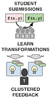
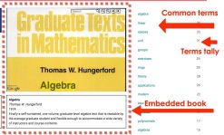
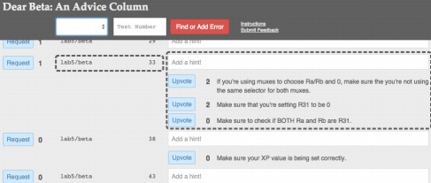
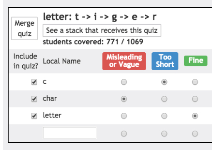
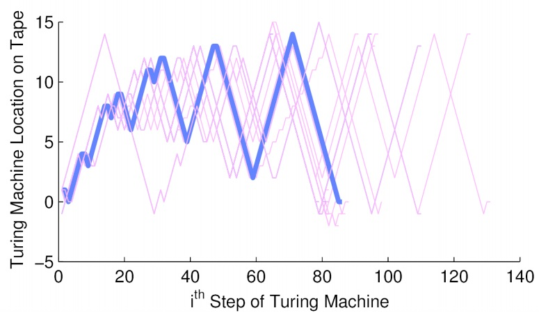
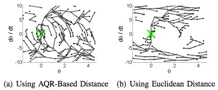

Elena L. Glassman, MIT PhD EECS
Postdoctoral Scholar, UC Berkeley
Fellow, Berkeley Institute of Data Science


Postdoctoral Scholar, UC Berkeley
Fellow, Berkeley Institute of Data Science

Prior to entering the field of human-computer interaction (HCI), she earned her M.Eng. in the MIT CSAIL Robot Locomotion Group and spent a semester at Stanford as a visiting researcher in the Stanford Biomimetics and Dextrous Manipulation Lab.
Papers
Abbreviations
| ACM / IEEE Conferences | ACM / IEEE Journals | ||
| CHI | Human Factors in Computing Systems Program Committee |
TOCHI | Trans. Computer-Human Interaction, Reviewer |
| L@S | Learning at Scale Program Committee |
TBME | Trans. Biomedical Engineering |
| UIST | User Interface Software and Technology Organizing Committee |
||
| CSCW | Computer-Supported Cooperative Work and Social Computing Reviewer |
||
| VL/HCC | Visual Languages and Human-Centric Computing | ||
| ICRA | International Conference on Robotics and Automation | ||
| ICER | International Computing Education Research |
| Figure | Year | Venue | Title and Authors | Context | Methods | Field | Affiliation |
|---|---|---|---|---|---|---|---|
 |
2017 | IEEE VL/HCC |
TraceDiff: Debugging unexpected code behavior using trace divergences by Suzuki, Soares, Head, Glassman, Reis, Mongiovi, D'Antoni, and Hartmann |
Programming classrooms [Github] [Demo] |
Program synthesis, User interface design |
HCI |  UC Berkeley UC Berkeley |
|  | 2017 | ACM L@S |
Writing Reusable Code Feedback at Scale with Mixed-Initiative Program Synthesis by Head, Glassman, Soares, Suzuki, Figueredo, D'Antoni and Hartmann |
Massive programming classrooms | Program synthesis, User interface design |
HCI, AI | UC Berkeley |
|  | 2016 | ASIS&T Annual Meeting | DocMatrix: Self-Teaching from Multiple Sources by Glassman and Russell |
Searching to learn |
Document corpus interface design | HCI | |
|  | 2016 | ACM CSCW | Learnersourcing Personalized Hints by Glassman, Lin, Cai, and Miller |
Massive programming classrooms | Crowdsourcing | HCI | |
 |
2015 | MIT CSAIL Tech Report | iBCM: Interactive Bayesian Case Model Empowering Humans via Intuitive Interaction by Kim, Glassman, Johnson, and Shah |
Massive programming classrooms | Interpretable interactive machine learning | HCI, ML | |
|  | 2015 | ACM UIST | Foobaz: Variable Name Feedback for Student Code at Scale. by Glassman, Fischer, Scott, and Miller |
Massive programming classrooms [Youtube] |
Program analysis, user interface design |
HCI | |
 |
2015 | ACM TOCHI | OverCode: visualizing variation in student solutions to programming problems at scale by Glassman, Scott, Singh, Guo, and Miller |
Massive programming classrooms [MIT Spotlight][Youtube] |
Program analysis, User interface design |
HCI | |
 |
2015 | ACM CHI | Mudslide: A Spatially Anchored Census of Student Confusion for Online Lecture Videos by Glassman, Kim, Monroy-Hernández, and Morris  Best of CHI Honorable Mention Best of CHI Honorable Mention |
Remote or massive classrooms [Youtube] |
User interface design | HCI | Microsoft Research |
 |
2015 | ACM CHI | RIMES: Embedding Interactive Multimedia Exercises in Lecture Videos by Kim, Glassman, Monroy-Hernández, and Morris |
Remote or massive classrooms [Youtube] |
User interface design | HCI | Microsoft Research |
|  | 2013 | ACM ICER | Toward Facilitating Assistance to Students Attempting Engineering Design Problems by Glassman, Gulley, and Miller |
Massive programming classrooms | Program analysis | HCI | |
 |
2012 | IEEE ICRA | Region of attraction estimation for a perching aircraft: A Lyapunov method exploiting barrier certificates by Glassman, Desbiens, Tobenkin, Cutkosky, and Tedrake |
Agile flying robots |
Kinodynamic trajectory planning and optimization | Robotics | Stanford |
|  | 2010 | IEEE ICRA | A quadratic regulator-based heuristic for rapidly exploring state space by Glassman and Tedrake |
Underactuated robots | Kinodynamic trajectory planning | Robotics | |
 |
2005 | IEEE TBME | A wavelet-like filter based on neuron action potentials for analysis of human scalp electroencephalographs by Glassman Intel Young Scientist Award, top prize at ISEF 2003[Press Release] [Profile, Science] [Profile, CNN's Lou Dobbs Tonight] [Interview, CNN's American Morning] |
Brain-computer interfaces | Wavelet analysis | Signal Processing |
Central Bucks West HS |